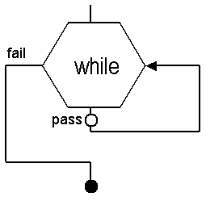

Inserting a 'While' flow control node
This is a Flow Control Node and represents a conditional branch and loop in the testflow.
It is used as follows: While a certain condition exists, do the test and if it passes, retest according to the "TestNum Inc".

When you insert a flow control node, you must enter, or select, your desired parameters in the dialog window which appears.
"Condition":
The condition in the flow control nodes is an arithmetic and/or boolean expression which may contain the following operators,
+, -, *, /, >, >=, <, <=, ==, !=, (, ), and, or, not and operands,
· (<expression>)
· <var_name>
· <real_number>
· "<string>"
· <string_expression>
Note that the varaibles are preceeded with the symbol @ (see Flow control nodes)
"TestNum Inc":
The Test Loop Increment parameter is an offset value that is added to calculate test numbers for two or more sequential executions of the same test suite within a loop.
The loop increment value is multiplied by the number of times the loop has been completed and then added into the final test number calculation. The test loop increment only affects test numbers within the loop and does not change the other test numbers.